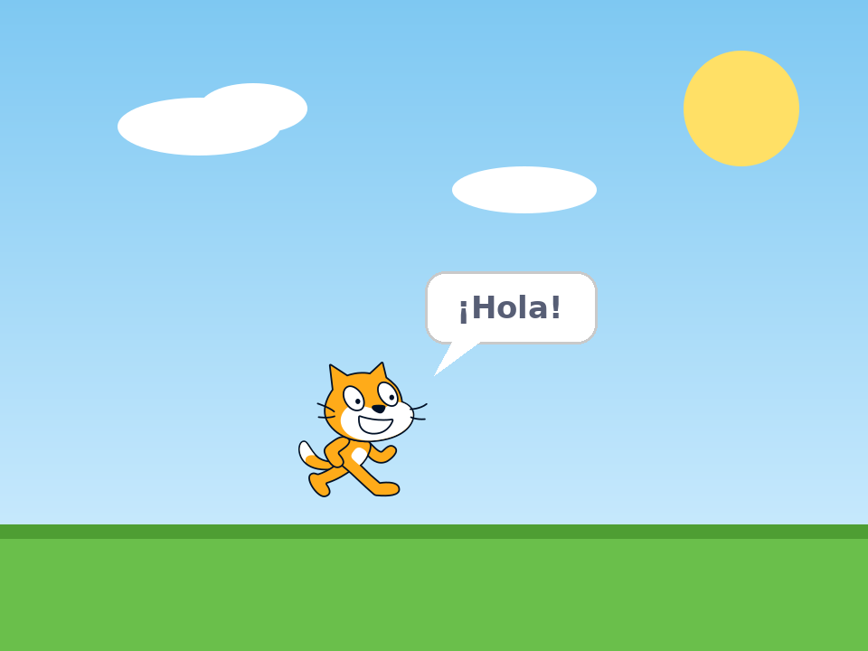
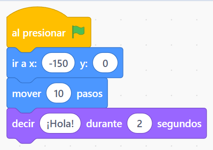
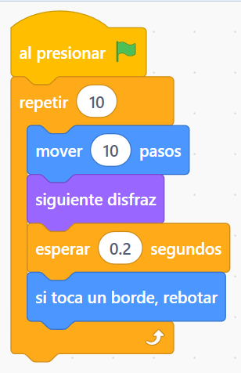
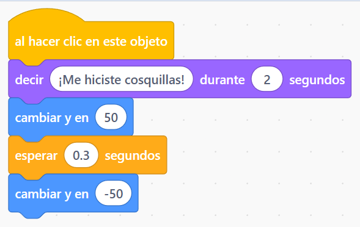
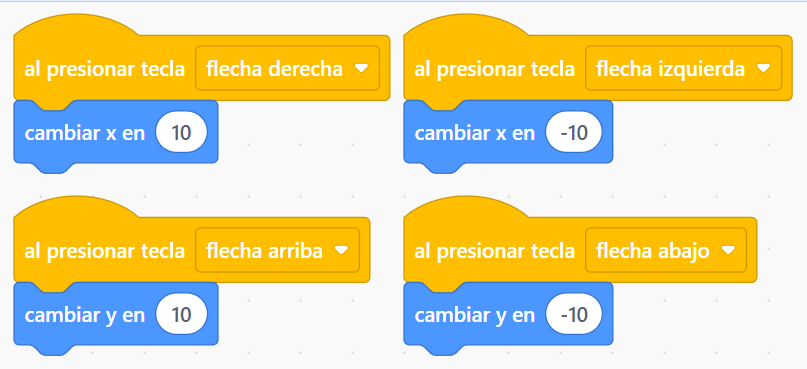

SAMUEL DIGITAL
SAMUEL DIGITAL
3° grado · Scratch
Primeros pasos en Scratch
¡Pasamos de ScratchJr a Scratch! Hacemos que el gato camine, hable, baile y salte.

Conocé Scratch
Entrá a Scratch y creá un proyecto nuevo. ¡Es como ScratchJr, pero más grande! Mirá las partes:
- A la izquierda, los bloques, ordenados por colores (Movimiento, Apariencia, Eventos, Control…).
- En el medio, el lugar donde armás tu programa.
- A la derecha, el escenario donde se mueve el gato. La bandera verde arranca y el círculo rojo frena.
💡 En ScratchJr los bloques tenían dibujos. En Scratch tienen palabras, ¡y los números los podés cambiar vos!
Actividad 1: El gato camina y habla
Arrastrá estos bloques y encastralos uno abajo del otro:
- al presionar 🚩 (en Eventos, amarillo)
- ir a x: -150 y: 0 y mover 10 pasos (en Movimiento, azul)
- decir ¡Hola! durante 2 segundos (en Apariencia, violeta)
Tocá la bandera verde. ¿Qué pasa si cambiás el 10 por 100? ¿Y si escribís tu nombre en vez de ¡Hola!?

Actividad 2: El gato baila NUEVO
Ahora usamos el bloque repetir (en Control, naranja). Todo lo que pongas adentro se repite las veces que digas.
- siguiente disfraz cambia el dibujo del gato y parece que camina.
- esperar 0.2 segundos hace que se vea despacito.
- si toca un borde, rebotar hace que no se escape de la pantalla.
💡 Cambiá el 10 de repetir por 50. ¿El gato baila más tiempo?

Actividad 3: Elegí tu personaje NUEVO
Tocá el botón del gatito de abajo a la derecha (Elegir un objeto) y elegí el personaje que más te guste. Con el botón de al lado del escenario elegí un fondo.
Ahora hacé que, cuando le hagan clic, diga algo y pegue un salto:
💡 Para saltar: sube 50 (cambiar y en 50), espera, y baja 50 (cambiar y en -50).

¡Probalo!
Tocá la bandera verde y hacé clic en tu personaje. ¿Camina, baila, habla y salta?
⭐ Desafío para los rápidos
¡Mové al personaje con las flechas del teclado! Usá el bloque al presionar tecla (Eventos) cuatro veces, uno para cada flecha. x mueve para los costados y y para arriba y abajo.

¿Más? Agregá un segundo personaje que haga su propio baile.